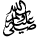

Silsilah
The Chain of the Honorable Mashaikh Naqshband (May the mercy of Allah be upon them)
Below is the silsilah of the tariqah Naqshbandi Mujaddidi for Shaykh Shakeel Ahmed (DB):
- The mercy for the worlds Rasulullah

[Holy City of Madinah Munawwarah]. - Sayyedina Hadrat Abu Bakr Siddiq (radiallahu anhu) [Holy City of Madinah Munawwarah].
- Hadrat Salman Farsi (radiallahu anhu) [Madain].
- Hadrat Qasim bin Muhammad bin Abi Bakr (rahmatullahi alaihi) [Holy City of Madinah Munawwarah].
- Hadrat Imam Jafar Sadiq (rahmatullahi alaihi) [Holy City of Madinah Munawwarah].
- Hadrat Khuwaja Bayazeed Bustami (rahmatullahi alaihi) [Bastam].
- Hadrat Khuwaja Abul Hasan Kharkani (rahmatullahi alaihi) [Kharkhan].
- Hadrat Khuwaja Abul Qasim Gorgani (rahmatullahi alaihi) [Jarjan].
- Hadrat Khuwaja Abu Ali Farmadi (rahmatullahi alaihi) [Mashad].
- Hadrat Khuwaja Yusuf Hamdani (rahmatullahi alaihi) [Turkistan].
- Hadrat Khuwaja Abdul Khaliq Gajadwani (rahmatullahi alaihi) [Bukhara].
- Hadrat Khuwaja Muhammad Arif Riogri (rahmatullahi alaihi) [Tajikistan].
- Hadrat Khuwaja Mehmood Injir Faghnavi (rahmatullahi alaihi) [Bukhara].
- Hadrat Khuwaja Azizane Ali Raamitni (rahmatullahi alaihi) [Bukhara].
- Hadrat Khuwaja Muhammad Baba Samasi (rahmatullahi alaihi) [Bukhara].
- Hadrat Khuwaja Sayyed Amir Kalal (rahmatullahi alaihi) [Bukhara].
- Hadrat Khuwaja Bahauddin Naqshband Bukhari (rahmatullahi alaihi) [Bukhara].
- Hadrat Khuwaja Ala'uddin Attar (rahmatullahi alaihi) [Hassar].
- Hadrat Khuwaja Yaqoob Charkhi (rahmatullahi alaihi) [Dushanbe].
- Hadrat Khuwaja Ubaidullah Ahrar (rahmatullahi alaihi) [Samarqand].
- Hadrat Khuwaja Maulana Muhammad Zahid (rahmatullahi alaihi) [Hassar].
- Hadrat Khuwaja Darvish Muhammad (rahmatullahi alaihi) [Sher Sabz].
- Hadrat Khuwaja Muhammad Amkangi (rahmatullahi alaihi) [Bukhara].
- Hadrat Khuwaja Muhammad Baqibillah (rahmatullahi alaihi) [Delhi].
- Hadrat Khuwaja Mujaddid Alf-Thani (rahmatullahi alaihi) [Sirhind Sharif].
- Hadrat Khuwaja Muhammad Masoom (rahmatullahi alaihi) [Sirhind Sharif].
- Hadrat Khuwaja Saifuddin (rahmatullahi alaihi) [Sirhind Sharif].
- Hadrat Khuwaja Hafiz Muhammad Muhsin (rahmatullahi alaihi) [Delhi].
- Hadrat Khuwaja Sayed Nur Muhammad Badaiooni (rahmatullahi alaihi) [Delhi].
- Hadrat Mirza Mazhar Janejana (rahmatullahi alaihi) [Delhi].
- Hadrat Shah Ghulam Ali Mujaddidi (rahmatullahi alaihi) [Delhi].
- Hadrat Khuwaja Shah Abu Sa'eed (rahmatullahi alaihi) [Delhi].
- Hadrat Khuwaja Shah Ahmed Sa'eed Dehlvi (rahmatullahi alaihi) [Holy City of Madinah Munawwarah].
- Hadrat Haji Dost Muhammad Kandhari (rahmatullahi alaihi) [Musazai Sharif].
- Hadrat Khuwaja Muhammad Usman Damani (rahmatullahi alaihi) [Musazai Sharif].
- Hadrat Khuwaja Sirajuddin (rahmatullahi alaihi) [Musazai Sharif].
- Hadrat Khuwaja Muhammad Fazal Ali Qureshi (rahmatullahi alaihi) [Miskeenpur Sharif].
- Hadrat Khuwaja Muhammad Abdul Malik Siddiqui (rahmatullahi alaihi) [Khanewal].
- Murshid-e-Alam Hadrat Khuwaja Ghulam Habib (rahmatullahi alaihi) [Chakwal].
- Hadrat Maulana Hafiz Zulfiqar Ahmad Naqshbandi Mujaddidi (rahmatullahi alaihi).
- Hadrat Maulana Mufti Shakeel Ahmed Naqshbandi Mujaddidi (damat barakatuhu).